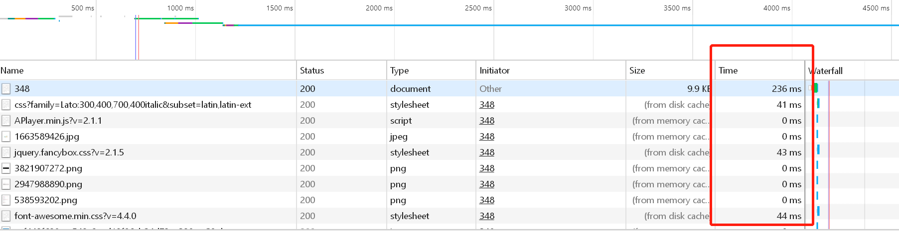

1.5s~0.02s，期间我们可以做些什么？
大爷我就算功能重做，模块重构，我也不做优化！！！
运行真快！
前言
本文主要探讨的核心是【为什么不要在循环中使用数据库操作？】
用了一个例子来说明为什么不要这样做的原因以及当遵循了这条规则后，所带来的好处：代码运行效率的提升、心情好（乱入-_-）之类的。
起因
最近在对一个老项目进行维护的时候，发现有一个页面加载很耗时，响应速度在1.7s以上，而且这个页面粗略看起来需要加载的东西也不是很多，为什么加载会这么慢呢？本着一探究竟和对这些慢响应无法忍受的态度去看了一下，发现它的代码写的很糟糕，到处都是循环，而且还在循环中进行了sql查询。后来在自己的优化下，从均加载1.5s到均0.02s，实现了一个质的飞跃。
本文，就是总结一下，自己在遇到这种代码的处理方式，以及思想的演化
介绍
本文所要优化的是一段，由权限控制的菜单，共有两级。而且需要在特定的菜单位置上显示待办事项的数量。普普通通的一段权限控制菜单访问的功能，其实处理起来也就是多了一个【特定菜单位置上显示代办数量】的功能，简单思考一下，只要找到对应的菜单id，在其上面增加一个对应的数字就可以了。想是这么想，做起来呢？
确定问题所在
遇到网页加载很慢的时候，首先要确定到底是哪一部分加载很慢。可以通过浏览器f12打开调试工具，在network选项里，查看当前页面上每条资源的加载耗时情况来推断。以我的博客某篇文章加载为例：

最右边有个红框标识的就是每条资源的加载耗时，我们可以看到第一条是php服务端的处理速度。下面的便是各种资源了。我要优化的那段业务中，发现正是由php服务端处理加载过慢带来的巨大耗时，平均每次这里加载需要1.5s以上。其他资源的加载速度平均都是在几十ms，那么就可以确定是这段php写的有问题了。
接下来我们就可以直接去看php代码了。
优化
检查代码，理解代码
找到对应的代码块，测试了一下这段代码块的处理时间，发现用时1.5s之多，有点震惊。简单看了一下代码，两大段过百行的代码块，经过一段时间的分析，发现有很多重复的、不必要的地方，现整理代码逻辑（伪代码）如下：
<?php
/**
* 1、取出一级菜单 并循环一级菜单
*/
foreach ($top_menu as $top_id=> $value1) {
/**
* 2、取出二级菜单 并循环二级菜单
*/
foreach ($second_menu as $key2 => $value2) {
/**
* 3、取出三级菜单 循环三级菜单 当前菜单项含有url信息
* 4、对权限进行验证 判断当前主菜单下是否拥有可以访问的权限
* 5、对顶级菜单需要显示的待办事项做处理
*/
foreach ($third_menu as $key3 => $value3) {
// 权限验证
$flag = $this->auth->check($ctrl, $action);
/**
* 做处理 在顶级菜单上增加待办事项数
* to do something
*/
// ............
// ............
/**
* 这里奇葩的是又调用了另外一个方法
* 传递了一个top_id 一级菜单ID
* 然后根据一级菜单重复2、3在对应的三级菜单上再增加待办事项
*/
$this->handle_son_backlog($top_id, $backlog_data);
}
}
}
这段代码块都做了什么呢？文字简述如下：
-
取出一级菜单
-
循环一级菜单，根据一级菜单id，取出二级菜单
-
循环二级菜单，根据二级菜单id，取出三级菜单，三级菜单包含url信息
-
循环三级菜单，验证权限，并决定一级菜单是否显示：将url拆分成uri块，生成验证权限所需要的参数
ctrl(控制器)和action(方法) -
根据确定好的一级菜单，增加一级菜单需要显示的待办事项数
好了，以上就是第一个函数的作用，然而，这还没完，在循环三级菜单的时候，又调用了另外一个方法handle_son_back_log()，这个方法传了两个参数，一个是一级菜单id，另外一个是待办事项数组，那么这个方法又做了什么呢？
-
根据一级菜单id，取出二级菜单
-
循环二级菜单，取出三级菜单
-
菜单权限验证
-
在对应的三级菜单上增加待办事项数
理解完原来代码的用意后，再修改起来就不难。本来打算再原本的基础上修改，但是用了一段时间发现，代码写得太乱，根本没办法在看，于是我决定，自己写，先改造一部分，去掉多余的第二个函数
第一次尝试修改
改变代码块的可读性；
经过第一次想法的修改之后，去掉了第二个方法多余的循环、重复验证的问题，代码变得稍微精简一些了：
/**
* 对特定的菜单进行处理 增加待办事项
* @param array &$son_data 子菜单信息
* @param array $backlog_data 待办事项数据
* @return array
*/
function handle_son_backlog(array &$son_data, array $backlog_data)
{
if (empty($son_data['id'])) {
return false;
}
switch ($son_data['id']) {
case '':
$son_data['backlog_num'] = (isset($backlog_data['xxx']) && empty($backlog_data['xxx'])) ? $backlog_data['xxx']: '';
break;
default:
# code...
break;
}
return $son_data;
}
/**
* 获取菜单
* @param array $backlog_data 待办事项数据
* @return array
*/
function get_menu()
{
/**
* 1、取出一级菜单 并循环一级菜单
*/
foreach ($top_menu as $key1 => $value1) {
/**
* 2、取出二级菜单 并循环二级菜单
*/
foreach ($second_menu as $key2 => $value2) {
/**
* 3、取出三级菜单 循环三级菜单 当前菜单项含有url信息
* 4、对权限进行验证 判断当前主菜单下是否拥有可以访问的权限
* 5、对顶级菜单需要显示的待办事项做处理
*/
foreach ($third_menu as $key3 => $value3) {
// 权限验证
$flag = $this->auth->check($ctrl, $action);
/**
* 做处理 在顶级菜单上增加待办事项数
* to do something
*/
/**
* 对子菜单的待办事项做处理
*/
$this->handle_son_backlog($value3, $backlog_data);
}
}
}
}
修改好之后，运行0.6s，快了一倍，但是这肯定是不够的。还是慢！！！
还能不能再快？
使用递归结构；
略看第一次修改后的代码还是有可以提速的地方。三层循环写的着实让人辣眼睛啊，因为在循环中还有数据库操作，请注意：任何在循环中参与数据库的处理都是不明智的选择。在大脑中构思了一下，其实这些完全可以通过递归来实现嘛。只需要把菜单一股脑取出来，在用递归形成树形结构就可以了。说干就干
先说说我这段处理大致思路：
-
取出菜单表里所有的菜单数据
-
调用递归方法，形成树形结构
-
递归的方法中，做一些特殊处理
-
确定是第三层菜单
-
对第三层菜单做权限处理
-
对第三层菜单做待办事项处理
-
差不多就是如上几步思路，完成版伪代码如下：
/**
* 对菜单进行递归处理 并验证权限 增加待办事项数量
* @param array &$menu 菜单
* @param array $backlog_data 待办事项数据
* @param array $menu_list 原来的菜单
* @param int $pid pid
* @param int|integer $last_pid 父菜单id
* @param int|integer $i 递归标识(用于执行特定操作)
*/
function get_handle(array &$menu, array $backlog_data, array $menu_list, int $pid, int $last_pid = 0, int $i = 0)
{
foreach ($menu_list as $key => $value) {
if ($value['pid'] == $pid) {
if ($i == 1) {
// 要验证的url
$check_url = explode('?', $value['url']);
// 拆分成uri数据段
$check_url_arr = explode('/', $check_url[0]);
// 控制器名
$ctrl = $check_url_arr[0] . '_' . $check_url_arr[1];
// 方法名
$action = isset($check_url_arr[2]) ? $check_url_arr[2] : 'index';
if ($this->auth->check($ctrl, $action)) {
$menu[$last_pid]['zi'][$value['type_id']] = $this->handle_son_backlog($value, $backlog_data);
}
} else {
$this->get_handle($menu, $rule_list, $backlog_data, $menu_list, $value['type_id'], $pid, 1);
}
}
}
}
/**
* 获取菜单
* @param array $backlog_data 待办事项数据
* @return array
*/
function get_menu(array $backlog_data)
{
// 获取菜单列表
$menuList = $menuModel->get_list(['id', 'name', 'pid', 'url'], ['version' => 1]);
// 取得一级菜单
foreach ($menuList as $key => $info) {
if ($info['pid'] == 0) {
$menu[$info['id']] = $info;
}
}
foreach ($menu as $id => $info) {
// 对菜单作递归处理
$this->get_handle($menu, $backlog_data, $menuList, $info['id']);
/**
* 判断当前主菜单下是否有子菜单 如果没有则释放掉当前一级菜单
* 如果有则对当前一级菜单进行待办事项处理
*/
//
//
//
}
return $menu;
}
差不多了就来进行调试一下吧，运行一看0.3s，感觉跟第一次修改的时候运行的也差不多嘛！（这时候已经比最初的运行速度提升了差不多4倍。）但隐隐觉得这还不够…
还能不能更快？
减少数据库查询次数；
重新梳理一下代码逻辑，试图找到可以优化的点。在梳理的时候注意到一个地方，就是$this->auth->check()这个检查权限的方法了。去跳转查看了一下，发现这方法也是查一次查一下数据库，这样的话，综合起来，这里还是牵涉到在循环中查询数据库的操作了。这块必须优化。
如果把当前登陆者已拥有的全部权限都取出来，替换掉check()这一块，是不是效率就会更快些？感觉答案应该是肯定的！
在经过一些调整之后，发现程序执行的速度有了极大的提升，增加了一段取出所有权限的操作：
/**
* 获取用户所有权限列表
* @param int $user_id 用户id
* @return array/boolean
*/
function get_user_operation_list(int $user_id)
{
$group_ids = $this->get_value_by_pk($user_id, 'groupid');
if ($group_ids) {
$group_ids_arr = explode(',', $group_ids);
// 取出用户所拥有的权限 控制器和方法名
$result = $this->db->select('o.module, o.action')
->from('admin_group_operations ago')
->join('operations o', 'ago.operations_id = o.operation_id', 'left')
->where_in('ago.group_id', $group_ids_arr)
->where('o.operation_id >', 0)
->get()
->result_array();
if (!empty($result)) {
$new_data = [];
// 生成指定的键值对
foreach ($result as $key => $value) {
$new_data[] = $value['module'] . '/' . $value['action'];
}
return $new_data;
}
}
return false;
}
并且在$this->auth->check()这行替换成了in_array($ctrl . '/' . $action, $operation_list。这样就差不多了。
运行一看，速度也挺喜人。竟然达到了0.014，比最原始的快了百倍不止。
然后再去看网页运行，发现我优化的这块，明显比网页上的其他模块加载速度要快了许多（因为项目用了iframe），之前是其他模块的内容出来了，头部的菜单还没出来。现在的情况恰恰相反，头部菜单最先加载出来，然后等待其他iframe的加载。
做完这番工作，长舒一口气，这一番coding没有白费。
总结
从这个例子中，我们可以得到一些，代码优化的技巧：
- 减少数据库的操作
好像就只有这个吧….2333333
思考
能不能够继续优化呢？放在缓存中会如何？
如果放在缓存中的话，也不是不行，但是这里有一个点就是这里的待办事项是可变的。而且项目中也没有使用socket的技术。如果单单存储在缓存中的话，那么更新缓存里的这块数据就会变得更加啰嗦。索性就暂时这样放着，能以后性能指标提高了，再来优化。
结。